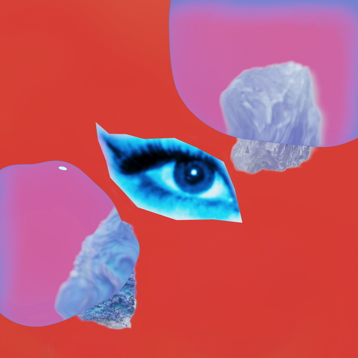
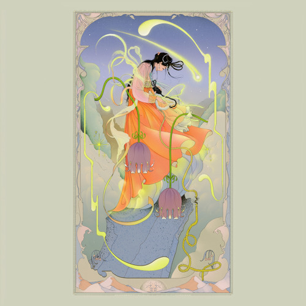
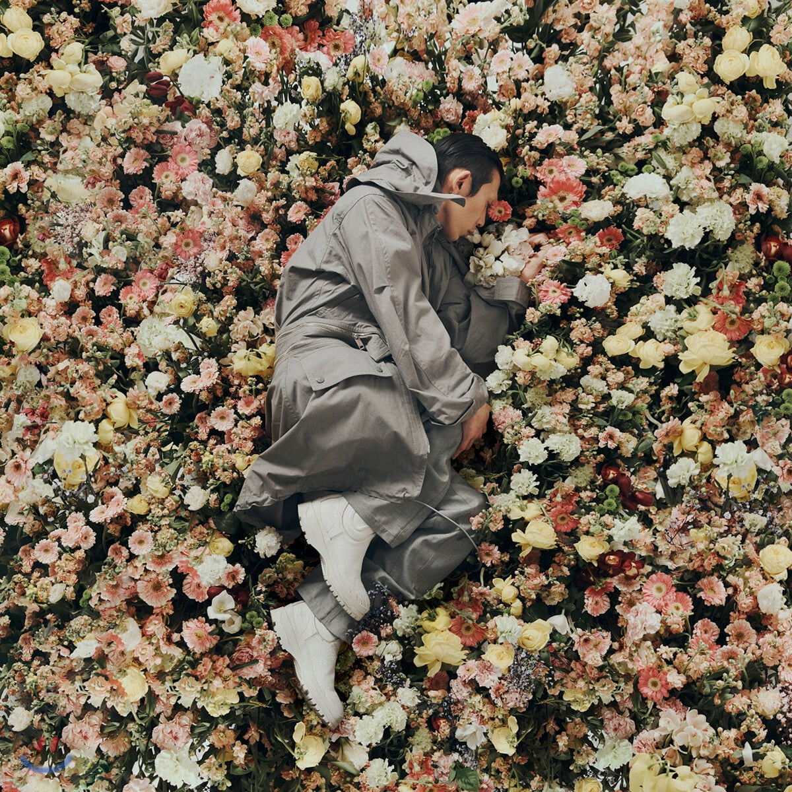
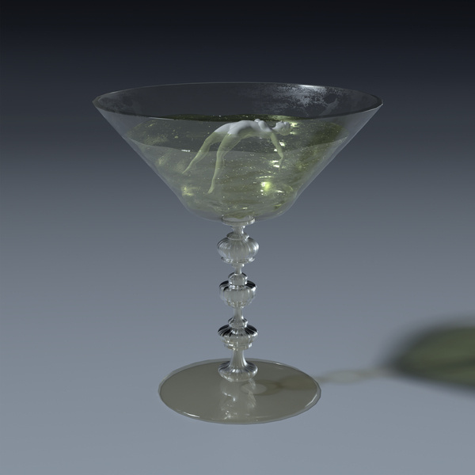

Tab Menu
- 
- CL • 사랑의 이름으로 • 2019
- +처음으로170205+
- 매일 나와 미래를 그려 갈 때면
너의 눈빛이 살아나는 것이 느껴져
다시 사랑할 수 없을 것 같았던
니 맘을 열어준 나의 Love
우리 다시 시작하자
Never meant to change
The fire in your eyes
처음으로, 워
처음으로, 워
돌아가자
가끔 달이 지고 해가 뜰 때까지
뜨겁게 싸우는 지난 날들도 있었지
다시는 식을 수 없을 것 같았던
내 맘을 닫아준 너의 Love
우리 다시 시작하자
Never meant to change
The fire in your eyes
처음으로, 워
처음으로, 워
돌아가자
다툴 때마다 느껴 데자뷔
섞을수록 불어난 거품
어디서부터 꼬인 건지 I don't know
It's too late to say goodbye
끝이 안 나도 맞춰가자 Puzzle
놓치기엔 아까운 거잖아 너도 나도
우리 둘 사이 가로막는 커튼
열어두고 첨으로
Let's rewind
우리 다시 시작하자
Never meant to change
The fire in your eyes
처음으로, 워
처음으로, 워
처음으로, 워
처음으로, 워
돌아가자
- 
- CIFIKA • All is you • 2021
- All is you
- 이걸 봐 내 맘은 모두 너야
닿을 수가 없어도, 닿고 싶었어
있잖아 지금 알 수 없어도
예전처럼 웃으면 알 수도 있어
슬퍼지는 날 우리 만나게 되면
하려했던 말들 모두 내가 다 말할게
우린 지금 어디 와있니
외쳐도 아무 대답조차 없지만
너는 지금 내게 와있지
아직도 헤매이는 너와 나야
우린 언제 헤어나
바라보게 되었나
- 
- CodeKunst • PEOPLE • 2020
- PEOPLE (feat. The Quiett & Paloalto)
- [Verse 1: Paloalto]
사람 만나기 싫을 때도 일하러 가야 돼
아닌 척 잘하는 게 어른이고 다 큰 거라대
감정을 다 보이면 남들한테 약점 잡힌대
그래서 얄미워도 때론 여우 가면 써야 돼
어쩌면 당신이 아는 나는 내가 아닐지도
근데 나를 내가 설명하기엔 너무 말이 길어져
그 뜻은 나조차도 나를 설명할 수 없을 만큼
복잡하고 꼬인 존재라는 거지 뭐
다 큰 척을 하기엔 아직 부족한 나
쿨한 척을 하기엔 많이 뜨겁나 봐
나의 솔직함은 타인에게 불편할까
아무리 가깝다 느껴도 넌 내가 아닌 거잖아
결국 이것도 나 저것도 나 전부 나
이해를 했든 받아들였든 함께라는 것에 고마워
어쨌든 우리 사이는 유행을 타지 않으니
필요할 때만 연락해도 돼, 상처를 안 받으니
[Chorus: Paloalto]
삐뚤어져 있어 왜 난 이럴까
삐뚤어져 있는데 넌 장난쳐 막
삐뚤어져 있어 왜 난 이럴까
삐뚤어져 있는데 넌 장난쳐 막
[Verse 2: The Quiett]
인간관계 복잡하지, 근데 뭐 있니
좋던 것도 별거 아닌 걸로 꼬이니
오해 마, 약간 비관적이지만 도입이
I wanna keep it positive
전부 다 무의미하다고 하기엔
도움을 너무도 많이 받으면서 살기에
혼자선 못 피지 내 날개
나의 외길 언제나 사람들이 함께했지
물론 알아, 결국엔 한두 명만 남겠지
괜찮아, 미움 없이 널 보내, 지금껏 그랬듯이
지나가면 뭐든 씻길 텐데 깨끗이, uh
많은 일들 뒤에 지금의 내가 됐듯이, uh
더 나은 나와 내일이 기다릴 걸 반드시
Respect for everybody
Even haters made me better
I used to fly solo now I wanna fly together
혼자만 잘나가는 건 재미없거든
If you show me some love
I'll show you much more luv
- 
- MISO • Slow Running• 2021
- Slow Runing
- One step back, I see more than what
We planted ourselves to feel
Take things slow, it takes more to grow
And to be real, that’s rare these days
Could I be trusted
Could I be something
Could I just get to know know know
I wanna be around for more
Could I be trusted
Could I say something
I’m ready to take off now
It’s just the beginning
Come unmask your thoughts with me
I won’t let go, I won’t let go
Catch you falling back to dark
I’m there, I’m there
You you you you, next (is) gonna be you
You you you you, don’t look so blue
You you you you, come on
And see through
You you you you, be good to you
Thе next day it’s the same
Thе same, the same
The next day it’s the same the same
Five more chances before we gone astray
Took a look into your mind, very strange
That’s what I like, It is what I like
I’m ready to jump into space
Come unmask your thoughts with me
I won’t let go, I won’t let go
Catch you falling back to dark
I’m there, I’m there
You you you you, next (is) gonna be you
You you you you, don’t look so blue
You you you you, come on
And see through
You you you you, be good to you
The next day it’s the same
The same, the same
The next day it’s the same the same
Let go of the pain in the rain
It’s gonna be a better day
Just know that only you know you
There is warmth in the air